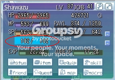
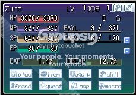

ไม่ใช่ของเราน่ะ
http://eco.froztic.in.th/archive/ecofanclub/
[Interface] Skin ECO [Saga 9][แจก Default ของ Iris ให้ทำกัน]
http://eco.froztic.in.th/archive/ecofanclub/viewtopic.php?f=27&t=57063
หน้า 7 จากทั้งหมด 14
ต้องขอโทษอีกทีที่ไม่ยอมทำ ALT7.2 ให้เสร็จซักที ไว้รอเวอร์ชั่น 8 ไปเลยละกันนะครับ
เหมือนกัน ฮ่าฮ๋า ผมดองไว้ก่อนซาก้าเจ็ดจะมาอีก
ขอบคุณนะคะ
สวยดี
สวยดี
ขอบคุณมากครับ เดี๋ยวลองโหลดไปดู 
แบบธรรมดายังรู้สึกเฉยๆ
แบบธรรมดายังรู้สึกเฉยๆ
แก้หลอด EP ไม่ขึ้นของสกิน Blueblue มาค่ะ
ไม่ทราบว่าได้มีคนแก้ไปก่อนหรือยัง
(ส่วนตัวตั้งแต่โหลดสกินมา ไม่ได้หาโหลดใหม่อีกเลย ต้องมานั่งแก้เอง )
V
v
http://www.4shared.com/file/100873093/c ... eblue.html

ไม่ทราบว่าได้มีคนแก้ไปก่อนหรือยัง
(ส่วนตัวตั้งแต่โหลดสกินมา ไม่ได้หาโหลดใหม่อีกเลย ต้องมานั่งแก้เอง
)
V
v

http://www.4shared.com/file/100873093/c ... eblue.html
รูปตัวอย่างเป็นภาพตัดต่อค่ะ อย่าคิดมากนะ *-*


โหลดไปแหละ สวยดีนะ

เด๋วก็ชินน่าใช้อยู่)
สวยอ่า ชอบ >x<
ใครพึ่งโหลด Sun and Sea ไปหลังจากวันที่ 26 - 04 - 2009 เวลา 11.20 PM
ช่วยโหลดใหม่ด้วย แก้ Bug
ช่วยโหลดใหม่ด้วย แก้ Bug
เตรียมเคลียร์เวลาให้ว่างพร้อมทำสกินซาก้า8
ALT8.0 จะประกอบไปด้วย
1. พร้อมใช้งานสำหรับซาก้า8
2. แก้บัคเก่าๆไปมากมาย
3. แคชช็อพแบบ ALT
ป.ล. มีการแก้ไปพอสมควรแล้ว ว่าจะอัพ 7.2 แต่รอ 8 ทีเดียวเลยน่าจะดีกว่า
ป.ล.2 ใครเจออะไรผิดพลา่ด ช่วยพีเอมมาด้วยครับ ช่วยๆกันหา
ื
ALT8.0 จะประกอบไปด้วย
1. พร้อมใช้งานสำหรับซาก้า8
2. แก้บัคเก่าๆไปมากมาย
3. แคชช็อพแบบ ALT
ป.ล. มีการแก้ไปพอสมควรแล้ว ว่าจะอัพ 7.2 แต่รอ 8 ทีเดียวเลยน่าจะดีกว่า
ป.ล.2 ใครเจออะไรผิดพลา่ด ช่วยพีเอมมาด้วยครับ ช่วยๆกันหา
ื
เจอบัคในสกิน...ยังมะว่างแก้เลย
สวยๆๆๆ
มาขอมั่งอิอิ
มาขอมั่งอิอิ